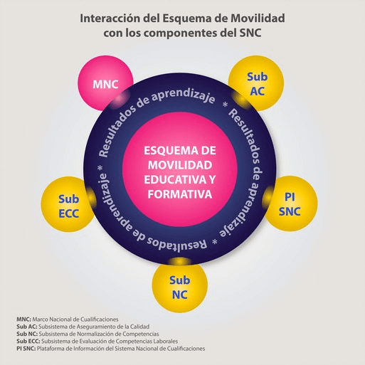
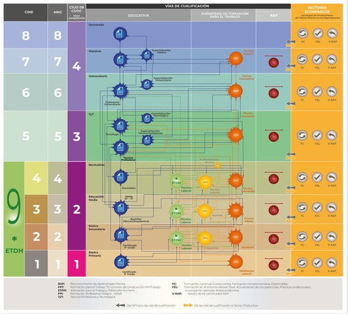

El Esquema de Movilidad Educativa y Formativa (EMEF) es uno de los seis componentes del Sistema Nacional de Cualificaciones y tiene como propósito permitir el tránsito, reconocimiento, acumulación, homologación y equivalencia de saberes, habilidades, conocimientos, competencias y aprendizajes previos, que favorecen la permanencia y el aprendizaje de las personas a lo largo de la vida, así como garantizar el reconocimiento entre los diferentes niveles educativos y formativos y las instituciones de acuerdo con los criterios definidos para dicha movilidad.
De este modo, se busca aportar a la reducción de las brechas existentes entre los niveles educativos y formativos respecto a la necesidad de los sectores económicos y productivos que solicitan certificación y formación en las diferentes áreas del conocimiento para la inserción laboral de las personas. Así como la construcción de un sistema de transferencia de unidades de medida que permita acordar los términos y condiciones del reconocimiento y la movilidad educativa y formativa.
Estos son los principales propósitos del EMEF:
¿Cómo interactúa el Esquema de Movilidad Educativa y Formativa -EMEF- con los demás componentes del Sistema Nacional de Cualificaiones -SNC?
En el SNC, el Marco Nacional de Cualificaciones (MNC) es la estructura que establece un lenguaje común (el de cualificaciones, competencias, resultados de aprendizaje y créditos) y unos insumos, los cuales permiten la comparabilidad, el reconocimiento de los aprendizajes y favorece la movilidad (horizontal y vertical) en las distintas vías de cualificación. Como un complemento fundamental está el EMEF, el cual actúa como elemento articulador y es una guía para aplicar los insumos que brinda el MNC.

El EMEF orienta acerca de las distintas trayectorias educativas y formativas, las instituciones, los programas, los tipos y las formas de reconocimientos de aprendizajes, así como la movilidad de estudiantes y las transferencias de las competencias y cualificaciones en una dinámica de transparencia, objetividad de criterios y procedimientos.
El documento Lineamientos Esquema de Movilidad Educativa y Formativa que se presenta a continuación, parte de las generalidades que permiten la concepción del EMEF, cuyo propósito es orientar acerca de los elementos estructurales del mismo y su articulación con los demás componentes del Sistema Nacional de Cualificaciones - SNC; describe los mecanismos y estrategias de movilidad en las vías de cualificación, detalla el impacto de las cualificaciones en la innovación curricular, brinda las orientaciones metodológicas y propone el rol de los actores que permitirán su implementación.

Cabe destacar que el EMEF continúa en proceso de construcción, teniendo en cuenta que transversaliza las vías de cualificación y permea todos los niveles del Marco Nacional de Cualificaciones - MNC, por lo que se espera que en la medida en que se avance en la reglamentación del Sistema Nacional de Cualificaciones - SNC y los subsistemas que lo componen, se puedan articular nuevos mecanismos, estrategias y procedimientos, que propendan por favorecer la movilidad educativa, formativa y laboral.
Consulte aquí los Lineamientos Esquema de Movilidad Educativa y Formativa